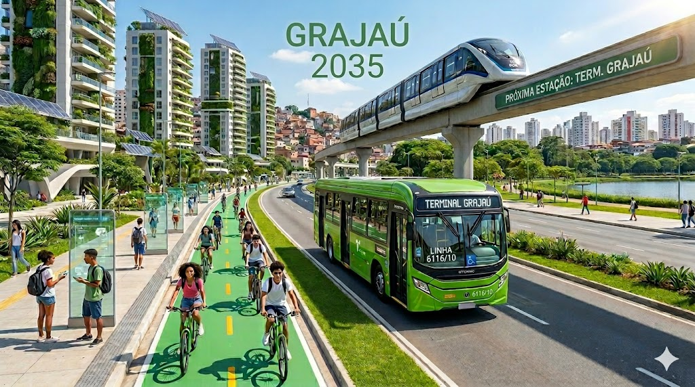
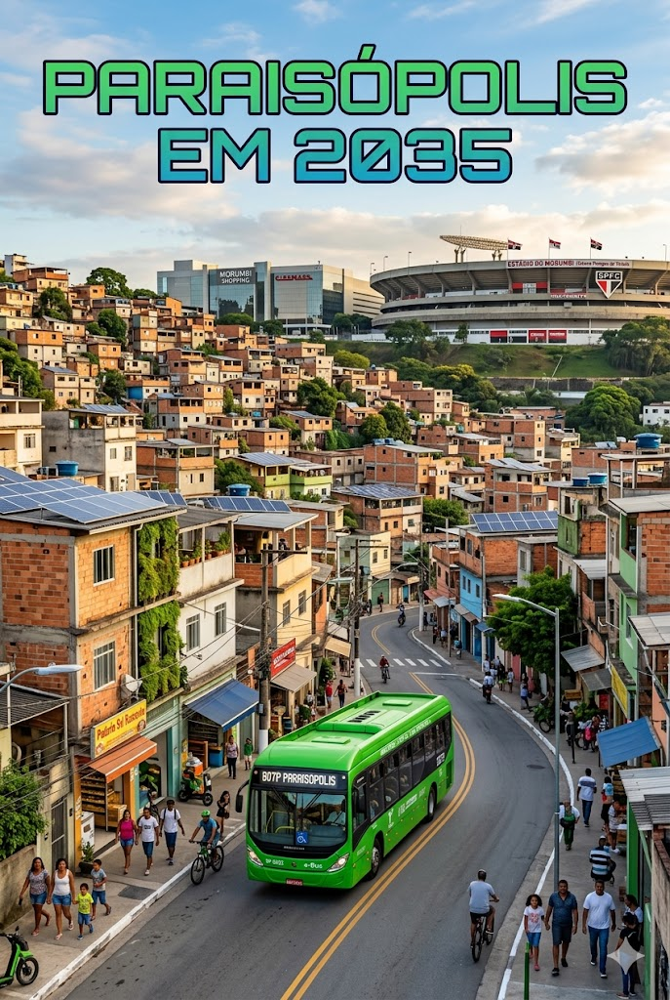

Grajaú
Como é hoje: O Grajaú é um bairro movimentado, com comércio local, transporte público e grande circulação de pessoas.
Como imagino em 2035: Imagino o Grajaú com mais áreas verdes, ciclovias, transporte inteligente e espaços tecnológicos para educação e lazer.

Paraisópolis
Como é hoje: Paraisópolis é uma das maiores comunidades de São Paulo, com forte atividade comercial e cultural.
Como imagino em 2035: Imagino Paraisópolis com infraestrutura moderna, moradias sustentáveis, centros de tecnologia e mais oportunidades para os moradores.
